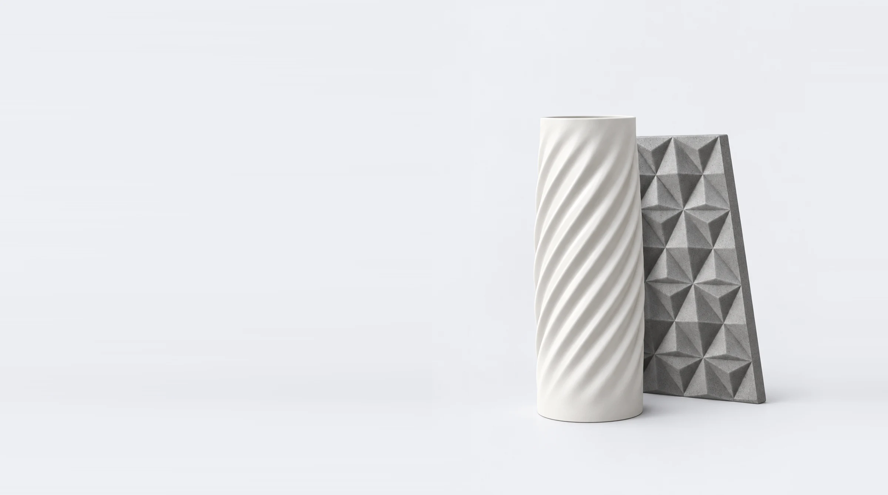
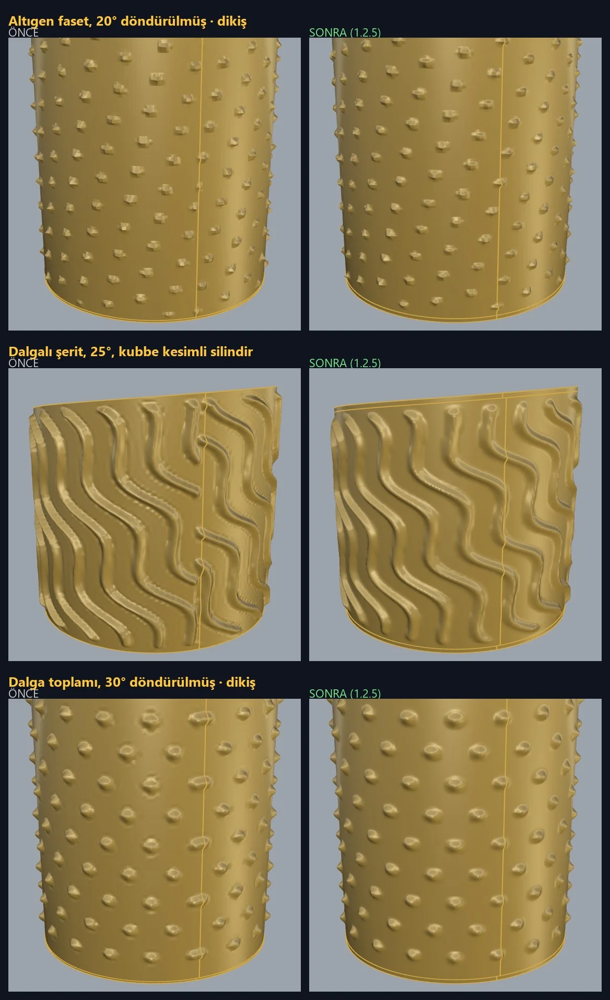
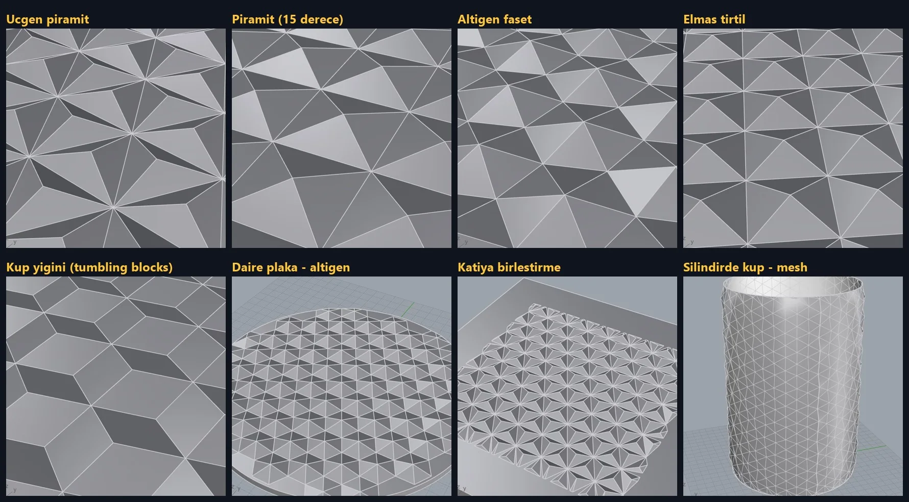
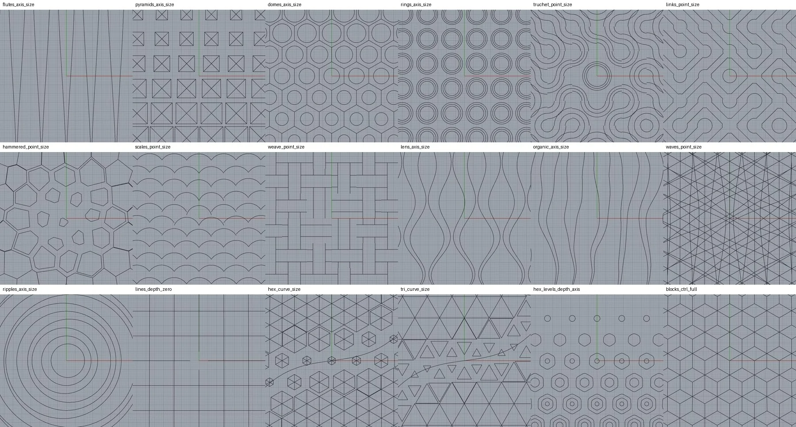
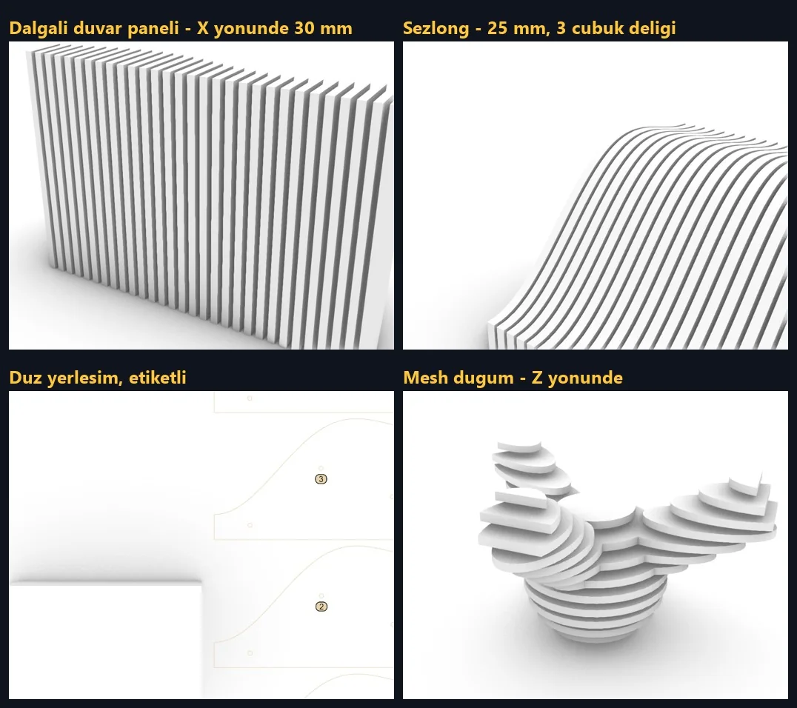
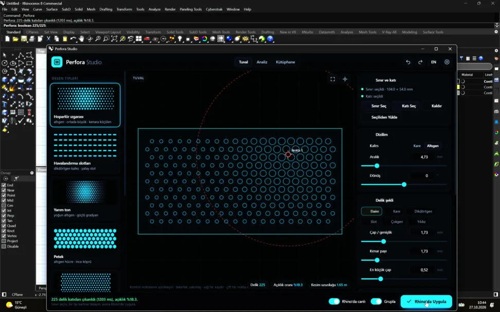

Rhino için gradyan kontrollü desen eklentisi
Ürün ve yüzey tasarımında tekrar tekrar elle çizdiğim delik, kafes ve faset desenlerini tek bir araca dönüştürmek için geliştirdiğim Rhino 8 ve 9 eklentisi. Desen tipi seçilir, tuval üzerindeki kontrolcüler sürüklenir; deliklerin boyutu ve derinliği bu noktalara yaklaştıkça yumuşakça değişir.
Desen düz panellerin yanında çift eğrilikli yüzeylere de sarılır; gövdeye gömülebilir ya da kabartılabilir. Arayüzü, geometri motorunu ve tanıtım filmini kendim tasarlayıp yazdım. Aynı çekirdek, tarayıcıda çalışan web sürümünün de temelini oluşturuyor.





Nokta ve eğri kontrolcüleri desenin boyutunu ve derinliğini yönetir; ortası derin, kenarı sığ gibi kurallar tek hareketle kurulur.
Kafes yüzeyin fiziksel ölçüsüne göre yerleşir; desen gövdeye gömülür, kabartılır ya da delik olarak kesilir, uçlar koni gibi daraltılabilir.
Delik, Voronoi kabuk, üçgen kafes, faset ve dilim desenleri aynı ayar sistemini paylaşır; kayıtlı ayarlar başka projelere taşınır.
Rhino içinde açılan web tabanlı arayüz: solda desen kartları, ortada sürüklenebilir tuval, sağda parametreler ve tek tuşla uygulama.